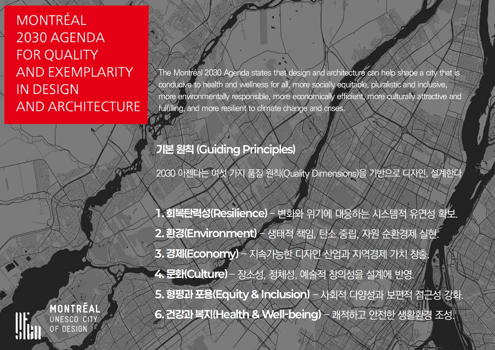
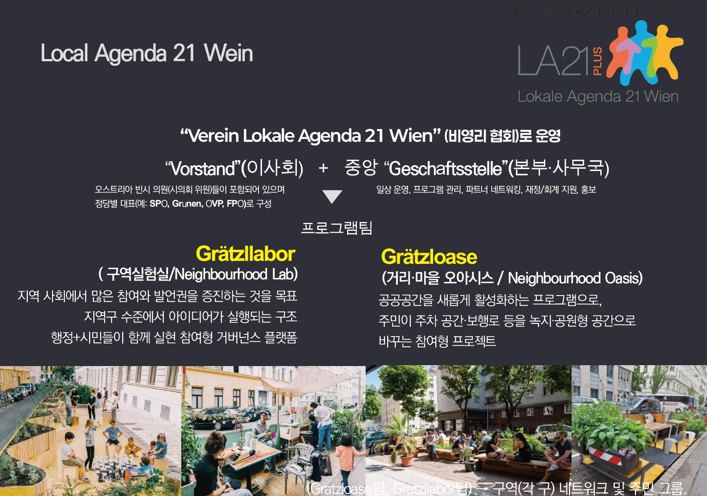
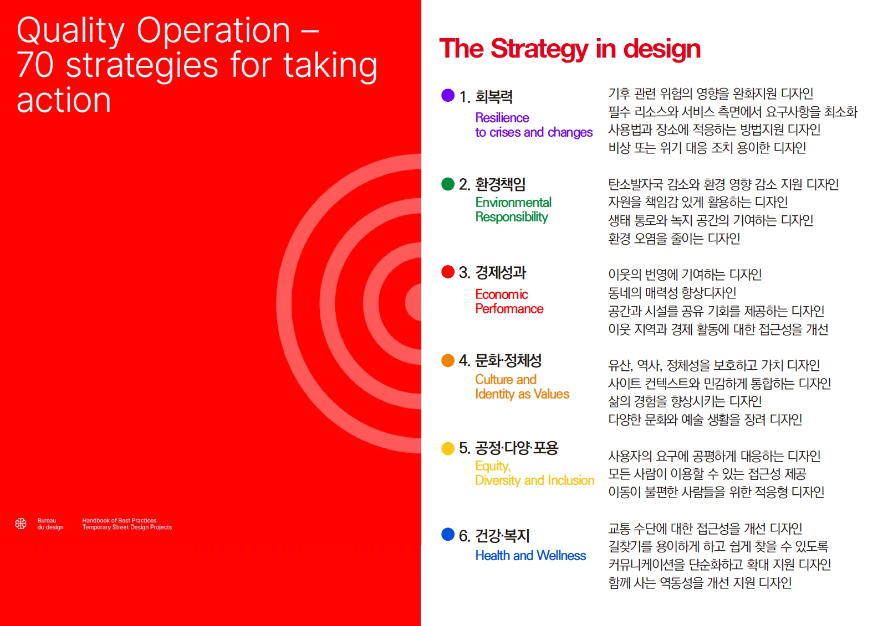
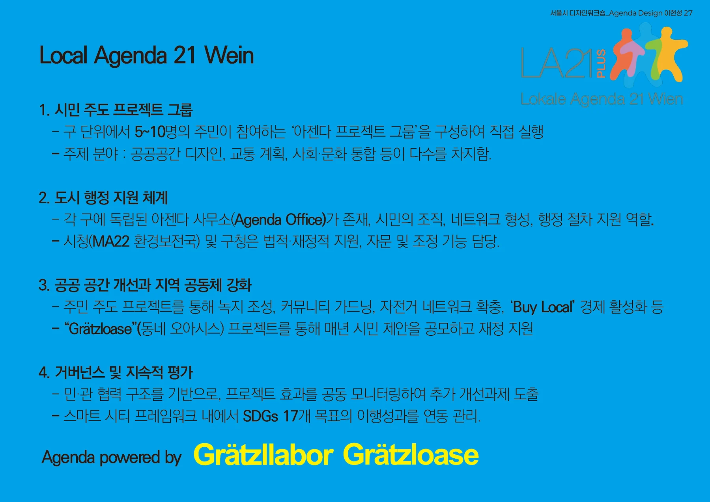

회복력을 위한 공공디자인
회복력을 위한 공공디자인
로컬아젠다 21 빈과 유네스코 디자인 도시 몬트리얼로부터의 교훈 -
이 현 성 (홍익대학교 공공디자인전공 교수)
[글 순서]
I. 회복력을 위한 공공디자인 의제
‘복합 위기의 시대’
‘회복력 의제’
‘의제1. 몬트리올 2030 아젠다’
‘의제2. 로컬 아젠다 21 빈’
Ⅱ. 회복력을 위한 공공디자인 전략
‘의제와 공공디자인’
‘지속가능한 회복력’
‘회복력을 위한 디자인전략’
‘회복력을 위한 디자인전략_거버넌스’
‘회복력을 위한 디자인전략_스튜어트십’
‘회복력을 위한 디자인전략_시스템’.
Ⅲ. 회복력을 위한 공공디자인 문화
‘도시 회복력 문화 확산’
I. 회복력을 위한 공공디자인 의제
‘복합 위기의 시대’
오늘날 도시와 지역은 기후재난, 팬데믹, 사회적 불평등, 고립, 디지털 전환과 같은 예기치 않은 복합적인 변화 위기를 동시적으로 경험하고 있다. 이에 대응하여 지속 가능한 발전을 도모하는 것이 필수적인 공공 의제가 되었다. 이러한 위기 상황 속에서 공공디자인(Public Design)은 단순한 미적 개선을 넘어, 공공 및 민간 부문 단체가 당면한 사회적 목적을 실행하기 위한 방침이나 수단을 구체화하는 정책적 역할로 확장되고 있다.
디자인은 어떤 목적을 달성하기 위한 실용적이고 창의적인 방법, 과정 또는 조형적 결과로서 정의되는데, 공공디자인(Public Design)의 범주는 물리적 구성요소(가로·광장·공공건축·사인·조경·조명·가구), 서비스 설계(정보·접근성·경험), 거버넌스 구현(참여·관리·운영)등 결과물과 과정의 전략들을 포괄적으로 의미한다. 이러한 디자인적 방법론을 공공 의제 실현을 위한 전략적 수단으로 구축하는 것이 오늘날의 정책 디자인의 핵심이다.
공공디자인(Public Design)이 확장을 통해 이러한 복합적인 변화 위기에 대응하며 실천적 전략으로 축적해 가고 있지만, ‘회복력(resilience)’이라는 목표를 명시적으로 채택하고 이를 달성하기 위한 체계적 방법론을 구축하는 과정은 아직 진행 중이다. 현대 도시는 '회복력(Resilience)'이라는 핵심 의제를 중심으로, 공공디자인이 어떻게 도시의 시스템적 유연성을 확보하고 사회적 가치를 구현하는 전략적 수단이 될 수 있는지 가능성을 찾아야 한다. 회복력을 공공디자인의 핵심 가치이자 성과 지표로 재정의하고, 이론적 토대, 원칙, 프로세스, 평가 기준, 사례, 정책 제안으로 이어지는 하나의 프레임워크를 제시하여, 실행 가능한 공공디자인 언어를 정책, 실무, 교육 현장에서 바로 활용할 수 있도록 하는 전략을 구축하여야 한다.
‘회복력 의제’
회복력은 "충격과 변동을 흡수·학습·적응·변형하여, 시스템의 핵심 기능을 유지·개선하는 능력"으로 정의된다. 여기서 시스템은 장소(거리·광장·공원), 서비스(이동·안전·정보), 커뮤니티(관계·거버넌스)를 포함한다. 중요한 것은 회복력이 단순한 기존 가지고 있던 물성적‘원상복구’가 아니라, 위기를 계기로 더 나은 상태로의 도약을 지향한다는 것이다. 이러한 회복력의 해석을 기반으로 공공디자인을 결과물과 과정의 전략들을 포함하는 포괄적 관점에서 해석하여 도시의 다양한 회복해야 할 요소들의 취약성을 감소시키며, 대체 가능성과 적응방법을 미리 설계하는 역할로 볼 수 있다. 결국, 회복력 의제는 결과이자 과정이며, 디자인의 목표이자 운영 원리이다.

‘의제1_몬트리올 2030 아젠다’
도시 의제를 살펴보기 위해 유네스코 디자인 도시로 지정된 캐나다 몬트리올을 살펴보면 디자인 및 건축 분야의 품질을 위한 몬트리올 2030 아젠다(Montréal 2030 Agenda for Quality and Exemplarity in Design and Architecture)가 있다. 이 의제는 몬트리올이 직면한 기후 비상사태와 그에 따른 중대한 생태적 및 사회적 전환을 성공적으로 이끌기 위한 핵심 도구이자 지침이다.
몬트리올 2030 아젠다가 추구하는 디자인 및 건축 품질을 보장하기 위한 원칙으로 첫째, 사회적, 문화적, 경제적, 환경적 지속 가능성을 통합적 목표로 삼아 거주민의 삶을 개선하고 지구에 긍정적인 영향을 미치는 지속 가능성(Sustainability)과 둘째 새로운 아이디어를 자극하고, 재정적 문제에 대한 해결책을 찾으며, 가치를 창출하고, 모두의 참여를 촉진하는 관행과 프로세스를 구축하는 창의성 및 혁신 (Creativity and Innovation)이 있다. 또한 이를 기조로 몬트리올 추구하는 도시의 비전은 6가지로 제시된다.
• 모두에게 건강과 웰빙을 제공하는 도시.
• 더 사회적으로 공평하고, 다원적이며, 포용적인 도시.
• 더 환경적으로 책임감 있는 도시.
• 더 경제적으로 효율적인 도시.
• 더 문화적으로 매력적이고 만족스러운 도시.
• 더 기후 회복력이 있는(Climate-Resilient) 도시.
몬트리올 2030 아젠다에서는 디자인과 건축이 기후 변화와 위기에 더욱 회복력 있는 도시를 형성하는 데 기여할 수 있다고 명시하며, 회복탄력성(Resilience)을 변화와 위기에 대응하는 시스템적 유연성 확보라는 측면에서 6가지 디자인 품질 원칙 중 하나로 설정하였다. 몬트리올의 사례는 회복력이 단순히 기후 환경 복구에 국한되는 것이 아닌, 다른 5가지 품질 차원(환경, 경제, 문화, 형평, 건강)을 통합하는 기초 시스템적 유연성을 제공한다.

‘의제2_로컬 아젠다 21 빈’
Local Agenda 21 Wien(LA21 Wien)은 UN‘아젠다 21’의 철학을 오스트리아 빈의 지역에 맞게 재설계한 것으로 지속가능하고 살기 좋은, 포용적 도시를 핵심 의제로 설정하였으며, 이는 빈의 장기 도시 정책 비전인 ‘스마트 시티 비엔나’ 및 2030 SDGs, 2040 기후 중립 목표와 일치한다. LA21 Wien의 실천적 방안은 동네(Grätzl)단위에서 회복력(Resilience)을 높이는 시민참여·거버넌스 프로그램을 기반으로 한다. 회복력을 위한 공공디자인의 성공은 효과적인 정책 전략과 거버넌스 모델에 달려 있다. LA21 Wien 핵심은 도시의 취약성을‘행정–시민–민간’의 협력으로 진단하고, 저비용·고효과의 소규모 실험을 빠르게 실행–평가–확대하는 운영 거버넌스에 인것이다. LA21 Wien은‘작은 실험을 빠르게, 투명하게, 함께’라는 방식으로 지역의 회복탄력성을 높이는 전력으로써 회복력 의제를 생활권 수준에서 설정하고, 실험–학습–확산을 기반으로 지역의 일상적 안전·안심·연결을 디자인한다.
Ⅱ. 회복력을 위한 공공디자인 전략
‘의제와 공공디자인’
‘몬트리올 2030 아젠다’와 ‘로컬 아젠다 21 빈’은 선진화된 도시들이 비전을 실현하기 위해 도시 의제를 설정하고 그것을 디자인을 비롯한 다양한 수단을 통해 구현하는 전략을 제시하고 있다. 그 의제가 공통으로 내재하고 있는 것은 회복력으로써 그 의제를 구현하는 다양한 전략을 살펴보는 것은 공공디자인이 지녀야 할 회복적 전략의 중요한 근간이 될 수 있다.
‘몬트리올 2030 아젠다’에서는 도시 의제를 구현하기 위한 전략적 도구로서 '좋은 디자인(Good Design)의 필수적인 전제 조건을 얘기하고 있다. 좋은 디자인은 미적, 기능적, 상업적으로 잘 작동하여 삶을 개선하고 지구에 긍정적인 영향을 미치는 지속가능성(Sustainable Design)을 의미한다.
좋은 디자인은 네 가지 축을 기반으로 실현된다
• 지속가능한 디자인: 경제적, 사회적, 환경적 가치를 낳는 디자인.
• 창의성과 혁신의 결합 과정: 아이디어(창의)와 실행(혁신)을 연결하여 시민에게 매력적이고 실용적인 제안으로 구체화하는 과정.
• 공공가치투자: 소비되는 비용이 아니라 측정 가능한 경제·사회·환경적 가치를 낳는 공공 투자.
• 좋은 디자이너와 좋은 클라이언트의 협업: 숙련된 디자이너의 역량과 이를 잘 이해하고 활용하는 행정가의 협업을 통한 실현 가능성 향상.

‘지속가능한 회복력’
회복력은 사회(Social), 생태(Ecological), 기술(Technological)등과 같은 영역에서 인프라를 기반으로 상호작용하는 과정에서 생성되며, 공공디자인 또한 도시 공간 인프라 사이의 인터페이스로 작동한다. 인프라를 넘어 회복력에서 중요한 것이 장소성과 경험인데 심리적 안전감 낯섦을 완충하는 친숙성, 그리고 서사성이 높은 공간은 위기 시에도 공동체 결속과 같은 무형적 회복력을 돕기 때문이다. 이를 기반으로 하는 지속가능한 회복력은 공공–민간–시민의 공동 관리를 기반으로 더욱 강화되며, 이를 통해 공공디자인은 물리적 공간과 시설을 만드는 행위를 넘어 규칙, 역할, 프로토콜을 함께 만들어 내는 도구의 역할도 가능하다.
이러한 측면에서 몬트리올의 의제를 기반으로 회복력을 위한 공공디자인의 주요 요소들은 다음 8가지로 살펴볼 수 있다.
| 디자인원칙 | 개념 및 목표 | 내용 및 전략 |
| 적응성 (Adaptability) | 모듈, 가변성, 임시/상설 전환이 용이하도록 설계 . | 유연한 모듈식 디자인, 새로운 필요에 대응 가능한 디자인 (예: 팬데믹 상황에서의 적응 응용성). |
| 복합성 (Multi-Function) | 핵심 기능외 다중 복합 기능 확보 | 상황 대응형 디자인 복합기능을 통한 적응성 강화 |
| 포용성 (Inclusivity) | 연령·능력·언어·문화 스펙트럼을 고려한 접근성·사용성 확보 . | 유니버설 디자인 원칙 적용 , 무장애 동선, 감각 약자 배려 디자인 . |
| 지역 순환성 (Locality) |
지역 네트워크를 우선하는 짧은 공급망 구축 . | 지역 일자리, 지역 재생자재 사용, 유지관리 바우처 . |
| 자연 기반 (NbS) |
빗물·바람·그늘 등 생태계 서비스 활용으로 미기후 안정화 . | 레인가든 , 수목 캐노피 , 토종 식재 . |
| 명료한 정보 (Clarity) | 평상시–위기시 전환 가능한 다중 채널 사인·신호 구축 . | 비상 모드 전환형 스마트 사인 , 고대비 팔레트 적용 . |
| 유지관리성 (Maintainability) | 수선 용이한 구조, 표준화된 부품, 시민 참여형 관리 시스템 . | 모듈 보수 시스템, 시민 운영 매뉴얼, 유지관리 예산 사전 계상 . |
| 학습성 (Learnability) | 사용 자체가 교육이 되는 인터랙션 (예: 시민 훈련, 데이터 피드백). | 재난 체험형 가구, 학습 루프 구축, 운영 데이터 공개 . |
‘회복력을 위한 디자인전략’
회복력 공공디자인을 실행하기 위해 환경, 사회, 문화, 경제의 네 관점에서 다양한 디자인 전략을 마련할 수 있다.
- 환경 회복력 디자인
환경 회복력 전략은 생태적 책임, 탄소 중립, 자원 순환 경제 실현을 포함한다.
• 그늘·통풍·투수 유도: 수목 캐노피, 바람길 조성, 투수 포장으로 열섬을 저감.
• 물 순환 회복: 레인가든, 저류·침투 시설을 통해 지표수 흐름을 복원.
• 생물다양성 패치: 토종 식재, 미세 서식처 조성, 야간 조도 관리를 통해 도시 생태계를 강화.
• 자원 순환: 재활용 가구, 지역 재생자재를 사용하며 모듈 보수 시스템을 도입.
- 사회 회복력 디자인
사회적 회복력 전략은 공동체의 안전, 상호부조 네트워크, 포용성을 강화한다.
• 심리적 안전: 시야 확보, 적정 조도 유지, 도움 요청 인터페이스 제공을 통해 불안감을 감소.
• 상호부조 네트워크: 주민 자치 툴킷, 비상 연락 체계, 생활권 거점을 활용하여 커뮤니티 연결을 강화.
• 접근성/보편성: 무장애 동선, 다언어 표기, 감각 약자 배려 설계 등 유니버설 디자인을 통해 포용성을 확보.
• 생활 리허설: 재난 체험형 가구, 평상시 프로그램의 비상시 전환 계획을 통해 사용자들의 학습성을 향상.
- 문화 회복력 디자인
문화적 회복력 전략은 장소성 기반의 서사성을 높여 공동체의 결속을 돕는다.
• 장소성 스토리텔링: 역사·기억 자산을 표층화한 해석·표지를 활용하여 장소의 정체성을 강화.
• 참여형 예술/제작: 시민 제작 워크숍, 지역 작가 협업을 통해 커먼즈 운영에 기여.
• 의례/축제 회복: 계절 행사, 마을 의식, 회복 스토리의 시각화를 통해 공동체 활성화를 유도.
• 교육·미디어: 학교, 도서관, 공원을 연계한 학습 루프를 구축.
- 경제 회복력 디자인
경제적 회복력 전략은 지역 순환 경제를 통해 유지관리의 지역화를 유도하고, 위기에 유연한 상업 모델을 지원한다.
• 지역 일자리: 유지관리, 제작, 운영의 지역화를 통해 지역 경제를 활성화.
• 회복탄력적 경제: 이동형/팝업 상점을 지원하고, 위기 시 필수품 제공 기능으로 전환 지원.
• 비용–편익의 다중 가치화: 건강, 안전, 사회 자본의 편익을 계량화하여 디자인의 공공가치투자.
• 금융·관리 모델: 책임 분담, 사회적 공헌(CSR), 공공 예산의 혼합 재정 모델을 구축.
- 기타 회복력 디자인
• 행동 기반 안전 디자인: 시선·동작 유도형 바닥 패턴, 군중 밀도 피드백 조명, 위험 영역 사전 경고 시스템을 적용.
• 심리·정서적 안전 디자인: 낯섦을 감소시키는 랜드마크·색채 규칙성, 재난 트라우마 완화 경관·음향·쉼터를 조성.
• 포용·보편 디자인: 유모차·휠체어·고령 동행 동시 고려, 촉지도·촉각 사인, 유니버설 UI를 도입.
• 기후 적응형 가로·광장: 모듈 캐노피(일사–우수 대응), 침수 고립 방지 데크, 그늘–물–휴식 통합 시설.
• 커먼즈 기반 운영: '도시 돌봄 반상회', 공간 사용권 공유, 시민 유지관리 프로그램등을 통해 시민 참여형 관리 모델을 구축.
‘회복력을 위한 디자인전략_거버넌스’
LA21 Wien은 지속 가능한 도시 개발에 기여하며 SDG 11 "지속 가능한 도시와 지역 사회"과 SDG 13 "기후 변화 대응"을 달성하는 데 기여하는 것을 목표로 한다.이를 위해 실행된 지역회복력을 주요 전략은 다음과 같다.
• 분권화된 참여형 전략
시 전체 중앙 계획이 아니라, 구 단위에서 지역 단위(Local Agenda 21 District)로 별도 실행된다. 예산은 약 4년 주기로 약 44만 유로가 투입되며, 시 예산 50%와 구 예산 50%가 매칭되어 운영된다.
• 시민 참여 공동 창작 전략
주민-정치-행정 간 협력 시스템인 ‘마을 실험실(Gratzllabore)’과 같은 주민 실험실을 운영한다. ‘마을 실험실(Gratzllabore)’은 시민들의 더 많은 참여와 발언권을 증진하며, 협력적 창조 과정을 통해 지속 가능한 프로젝트를 실현하도록 돕는다.
• 의제 통합 전략
스마트 시티 빈 전략과 SDGs 목표를 행정 전반에 통합하여, 시 환경국(MA22)이 지속가능성 조정 역할을 수행하고 모든 도시 정책 평가에 성과지표를 반영한다.
빈의 회복력 및 포용성 전략은 ‘마을 오아시스(Grätzloase)’ 프로젝트를 통해 실현되었다. 이는 공공 공간을 활성화하고 공동 설계하는 활동 프로그램으로, 주민이 직접 주차 공간이나 보행로 등을 녹지·공원형 공간으로 바꾸는 참여형 프로젝트이다.
• 미기후 및 환경 개선: 울창한 식재와 태양광 관수 시스템을 활용하여 그늘 및 냉각 효과를 제공하고 더 나은 미세 기후를 조성함으로써 기후 회복력 요소를 포함한다. 350개 이상의 그린 파크렛이 실현되었으며, 모듈형 파크렛을 신청하여 참여가 쉽게 이루어질 수 있다.
• 사회적 연결성 강화: 소비 없는 만남 공간, 소형 쉼터 조성, 이웃 만남 공간 등 다기능 커뮤니티 장소를 제공하여 사회적 연결성을 증진한다.
• 도시 계획과의 연계: 이 프로젝트는 15분 도시(15-Minute City) 구현을 위한 보행, 자전거, 공공 공간 재배분 전략과 연계된다.

‘회복력을 위한 디자인전략_스튜어트십’
몬트리올 2030 아젠다는 디자인을 통해 도시가 기후 변화 및 위기에 더 회복력을 갖추고, 사회적으로 공평하며, 환경적으로 책임감 있는 도시가 될 수 있다고 제시한다. 몬트리올의 디자인 품질의 6가지 핵심 차원은 회복탄력성, 환경, 경제, 문화, 형평과 포용, 건강과 복지이다. 이 중 회복탄력성(Resilience)은 변화와 위기에 대응하는 시스템적 유연성 확보를 목표로 하며, 다른 5가지 품질 차원(환경, 경제, 문화, 형평, 건강)을 통합하는 기초 시스템적 유연성을 제공한다.
몬트리올은 임시 거리 디자인 프로젝트(Temporary Street Design Projects in Montréal)를 통해 도시 회복력을 강화하는 구체적인 방안을 제시한다. 도시 회복력은 만성적인 스트레스나 급성 충격 유형에 관계없이 주요 변화에 적응하는 능력으로 정의되며, 일시적인 생활 환경을 재구성하고 새로운 개발 솔루션을 시험할 기회를 포착하는 집단적 능력을 의미한다.
- 기후 영향 완화 및 환경 적응
• 냉섬 조성: 폭염기 보행자의 열 스트레스를 감소시켜 회복 시간을 단축. 연속형 옴브리엘(차양) 설치, 밝은 컬러 팔레트 활용, 미세 분무 노즐 존 배치와 같은 분산형 냉각 시스템 통합을 통해 열섬 현상을 완화.
• 자연 기반 솔루션 (NbS): 물 순환 관리를 돕기 위해 광범위한 식재 공간을 통합하여 하수도로 유출되는 빗물의 양을 저감. 물이 덜 필요하여 가뭄에 강한 토종 식재를 선택 및 CO2 포집을 돕는 식재를 추가.
- 사용 및 공간의 적응력 확보
• 가변·이동형 모듈: 예기치 않은 위기 상황이나 다양한 수요 변화에 즉각적으로 대응하기 위해 유연한 디자인을 강조. 표준화된 모듈 및 조인트 시스템과 퀵 릴리스 시스템을 적용하여 신속한 분해·조립을 가능하게 하여 설정 시간과 비용을 절감.
• 저탄소 및 재사용 전략: 지속 가능하고 재사용 가능한 재료를 사용하여 반복적인 계절 프로젝트에 활용. 모듈형 시스템은 현장 설치·철거 작업 시간 및 인건비를 약 30% 증대시키고, 물류 비용과 탄소 발자국을 동시 절감하는 효과. 기존 가구를 지역 장인·아티스트와 협업하여 새롭게 재생시킴으로써 자재 비용과 내재 탄소를 절감하고 장소성을 강화.
- 포용성 및 접근성
• 통합적 접근성: 유니버설 디자인 원칙을 적용하며, 온타리오 거리 사례처럼 시각 장애인이 길을 찾기 쉽게 하는 공공시설물 디자인을 도입하여 신체·감각·인지 접근성을 통합.
• 인체 공학적 가구: 다양한 체형과 능력을 가진 사람들의 요구를 충족시키기 위해 다양한 종류의 가구를 사용한다. 특히 자주 휴식이 필요하거나 앉고 일어서기 어려운 사람들을 위해 팔걸이가 있는 등받이 벤치와 충분한 밑 공간을 갖춘 인체 공학적 좌석 표면을 설치.
• 일상 기후 대피 지원: 극단적 기후 상황(폭염·한파)에서 취약계층이 피난할 수 있는 임시 공간을 조성하는 것은 도시 회복력을 향상하고 생명을 보호하는 핵심적인 디자인 역할. 퀘벡의 '보르네오'프로젝트와 같이 소화전에 부착하여 성인, 어린이, 거동이 불편한 사람도 이용 가능한 음수대로 변환해주는 장치 또한 일상적인 건강 위험을 줄이는 해결책.
• 세대 간 통합: Ontario en fête 프로젝트처럼 공공 공간은 세대 간 만남과 놀이, 휴식에 적합하게 조성되어 젊은이와 고령자층 사이의 통합적 사용을 통해 즐거움과 대화의 순간을 제공.
- 경제적 성능 및 매력도 강화
• 사회적 활동 복합 용도: 디자인은 상업 기능을 보완하는 놀이, 휴식, 문화, 안내 등 생활 기능을 추가하여 '완결형' 거리 경험을 제공. 방문자 체류 시간 증가와 더불어 상권 내 순환 동선 강화를 통해 지역 경제적 회복력에 기여.
• 정체성 및 랜드마크: 새로운 정체성, 명확하고 눈에 띄는 시각적 표식 및 흥미로운 장소 하이라이팅을 통해 지역의 매력도를 향상. 공공미술 조형물이나 타이포그래피 배치로 장소 인지도 확산을 유도.
‘회복력을 위한 디자인전략_시스템’
회복력 디자인의 실현은 객관적인 측정과 제도적 기반 없이는 불가능하다. 회복력을 공공디자인의 핵심 목표로 제도화하기 위해서는 다음과 같은 정책적 조치가 필요하다
• 회복력 영향평가(Resilience Impact Assessment)를 도입하여 설계 초기 단계부터 회복력 요소 반영을 의무화해야 한다.
• 유지관리 예산의 사전 계상을 총사업비의 일정 비율로 의무화하여 디자인의 지속가능성을 확보해야 한다.
• 시민 유지관리 프로그램 또는 지역 기업 CSR 매칭 등 하이브리드 재정 모델을 활용해야 한다.
• 도시, 학교, 공원을 연계하는 회복력 교육과정 상시화가 필요하다.
• 실패 사례 공개와 학습 데이터베이스를 구축하여 재설계 루프(Learning Loop)를 제도화해야 한다.
• 교육·역량 강화 로드맵을 통해 공무원·디자이너·시민 대상 공동 교육, 스튜디오 기반 PBL(실측–프로토타입–현장 실험–평가), 그리고 도시 간 회복력 디자인 레지던시·펠로십 등 국제 교류를 포함해야 한다.
Ⅲ. 회복력을 위한 공공디자인 문화
‘도시 회복력 문화 확산’
사악한 문제를 위시한 오늘날 도시와 지역의 복합적인 위기에 대응하여 지속가능한 발전을 도모하는 것이 필수적인 공공 의제가 되었다. 이러한 맥락에서 회복력(Resilience)은 공공디자인의 핵심 가치이자 목표로 재정의되어야 한다. 성공적인 회복력 전략을 구축하기 위해 로컬 아젠다 21 빈과 유네스코 디자인 도시 몬트리올의 사례를 살펴보았다.
몬트리올 2030 아젠다는 회복탄력성(Resilience)을 도시 디자인 품질의 6가지 핵심 차원 중 하나로 설정하여, 환경, 경제, 문화, 형평, 건강 등 다른 품질 차원을 통합하는 시스템적 유연성을 제공하는 기초로 삼았다. LA21 Wien은 회복력 전략을 동네(Grätzl) 단위에서 실행하며, ‘행정–시민–민간’의 협력을 통한 운영 거버넌스를 핵심으로 지역의 일상적 안전과 연결성을 강화했다.
회복력을 위한 공공디자인은 환경 회복력, 사회 회복력, 문화 회복력, 경제 회복력의 구체적 지향점 구축을 통해 전략적 활용도가 더욱 높아질 것이다. 또한, 회복력을 공공디자인의 핵심 목표로 제도화하고 실현하기 위해서는 객관적인 측정과 제도적 기반 마련이 필수적인데, 디자인을 통한 회복력 영향평가(Resilience Impact Assessment), 디자인 구축을 통한 유지관리 예산의 사전 계상 및 시민 유지관리 등의 하이브리드 재정 모델, 디자인 실험을 통한 공공가치의 실증 사례 공유와 데이터베이스를 구축하여 공유루프(Learning Loop)를 제도화하는 것이 중요하다.
공공디자인은 물리적 공간과 시설을 넘어 회복력을 위한 실천방안의 도구로서, 제도적·전략적 프레임워크를 통해 복합 위기 시대의 도시 회복력 문화를 확산하는 데 결정적인 역할을 수행할 수 있다.
Reference
United Nations. Agenda 21: Programme of Action for Sustainable Development. 1992. https://www.un.org/esa/dsd/agenda21
European Sustainable Cities & Towns Campaign. Charter of European Cities & Towns Towards Sustainability (Aalborg Charter). ICLEI Europe, 1994. https://sustainablecities.eu/fileadmin/repository/Aalborg_Charter/Aalborg_Charter_English.pdf
European Sustainable Cities & Towns Campaign. The Aalborg Commitments. ICLEI Europe, 2004. https://sustainablecities.eu/fileadmin/repository/Aalborg_Commitments/Aalborg_Commitments_English.pdf
Lokale Agenda 21 Wien. “Lokale Agenda 21 Wien – Startseite.” Accessed October 30, 2025. https://la21.wien/
Smart City Wien. “Grätzloase.” December 21, 2021. Accessed October 30, 2025. https://smartcity.wien.gv.at/graetzloase/
Vienna.at. “Schon über 100 Grätzloasen auf Parkplätzen in Wien.” October 15, 2024. Accessed October 30, 2025. https://www.vienna.at/schon-uber-100-gratzloasen-auf-parkplatzen-in-wien/9006163
Garteln in Wien. “Lokale Agenda 21 Wien.” Accessed October 30, 2025. https://www.garteln-in-wien.at/agenda-21/
MONTRÉAL 2030 AGENDA FOR QUALITY AND EXEMPLARITY IN DESIGN AND ARCHITECTURE. 2019. Ville de Montréal. Accessed October 30, 2025. https://www.designmontreal.com/en
Bureau du design, Ville de Montréal. Handbook of Best Practices: Temporary Street Design Projects. Accessed October 30, 2025. https://www.montreal.ca/en/departments/bureau-du-design
이 글의 판본과 수록 정보 ＋
이현성 명의가 확인된 판본 있음; 최종 집필 범위 확인 필요
원고·초안의 표현을 보존해 수록한 온라인 편집본입니다.
- 수록 자료
- 회복력을 위한 공공디자인_이현성.hwp
- 자료의 날짜 단서
- 2025-11-01 · 실제 발표일과 다를 수 있습니다.
- 관련 파일
- 5개 / 서로 다른 본문 5종